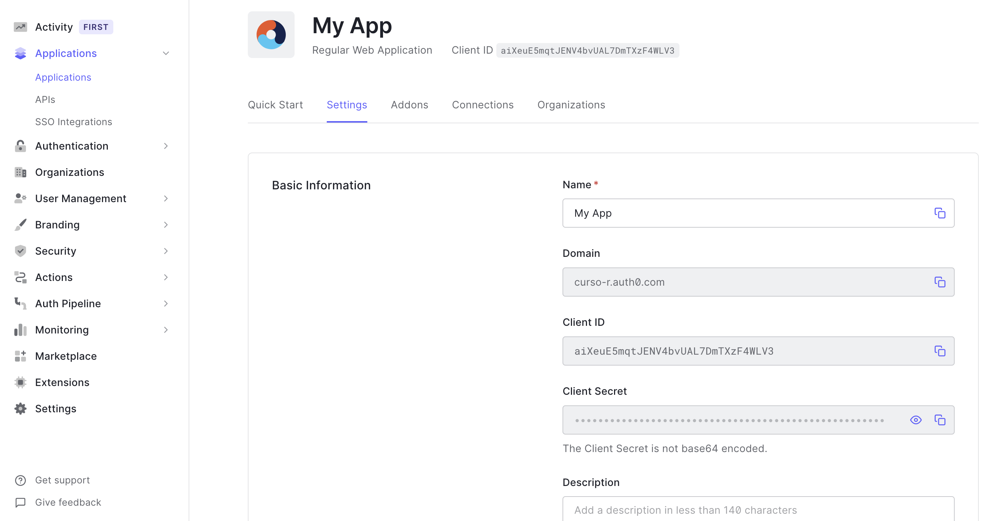
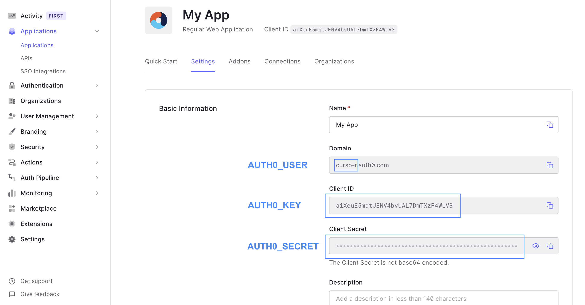

9 Deploy
Neste capítulo (e neste livro como um todo), falaremos de deploy apenas no contexto do serviço shinyapps.io e da configuração de um Shiny Server.
Não falaremos neste livro sobre a utilização de computação em nuvem pois existem muitos serviços disponíveis (AWS, Google Cloud Plataform, Azure etc) e é um tema em constante atualização.
9.1 ShinyApps.io
O ShinyApps.io é um serviço da RStudio para hospedagem de aplicativos Shiny.
A conta gratuita permite até 5 aplicações simultâneas e 25 horas mensais de uso (um aplicativo utilizado por 1 hora consome 1 hora do seu plano, 2 aplicativos utilizados simultaneamente por 1 hora consomem 2 horas do seu plano). As contas pagas, além de mais horas, fornecem outras vantagens, como suporte personalizado e autenticação.
Criada uma conta, você deve conectá-la com o RStudio. Feito isso, você conseguirá fazer o deploy do seu app com alguns cliques. A seguir, mostramos o passo a passo para conectar a sua conta e para fazer o deploy do seu app.
9.1.1 Conectando a sua conta com o RStudio
Primeiro, crie uma conta no serviço site shinyapps.io.
Faço o login na sua conta e, no menu lateral, acesse Account > Tokens.
Na página de tokens, clique no botão “Add Token” para criar um novo token. No token criado, clique no botão “Show”.
Na caixa de diálogo aberta, clique no botão “Copy to clipboard” ou clique no botão “Show secret” e copie o código apresentado à esquerda dos botões.
# O código que você deve copiar é similar a este
rsconnect::setAccountInfo(name = 'sua_conta',
token = 'seu_token',
secret = 'secret_do_token>')Abra o seu RStudio e acesse Tools > Global Options… > Publishing.
Na seção “Publishing sections”, clique no botão “Connect”.

Selecione a opção “ShinyApps.io.” e, na tela seguinte, cole o código copiado no site. Clique em Connect Account e pronto! Seu RStudio estará conectado com a sua conta do ShinyApps.io. Você só precisa fazer isso uma vez por conta ou computador.

9.1.2 Subindo o seu app
Com a conta conectada, para subir um app para o servidor do shinyapps.io basta abrir o script do seu app e clicar no botão “Publish”.

Na caixa de diálogo, selecione à esquerda o código do seu app e todos os outros arquivos dos quais ele depende, como bases de dados e a pasta www. Em seguida, escolha um nome para o seu aplicativo (esse nome fará parte do link) e clique em “Publish”.

O processo de deploy pode levar alguns minutos, a depender das dependências do seu app e tamanho dos arquivos que você subir. Quando o processo terminar, você receberá uma URL para acessar o aplicativo.
Caso o seu app não abra devido a algum erro, você pode acessar os logs de utilização para ter uma dica do que aconteceu. Para isso, no dashboard do ShinyApps.io, acesse Applications > All, no meu lateral. Em seguida, clique no app que você gostaria de investigar. Por fim, acesse a opção “Logs”.

9.2 Autenticação
Quando subimos um app para o shinyapps.io, nosso app passa a ficar disponível em uma URL pública (i.e. qualquer pessoa pode acessar.). O serviço permite autenticação apenas a partir da conta Standard, cujo alto custo mensal pode ser um impedimento.
Nesta seção abordaremos algumas soluções gratuitas1 para criar uma etapa de autenticação no acesso ao seu app. Começaremos com o pacote auth0.
9.2.1 Autenticação com o pacote auth0
O {auth0} é um pacote desenvolvido pela equipe da Curso-R que permite a implementação de um esquema de autenticação no Shiny usando o serviço Auth0.
Você pode instalar o pacote diretamente do CRAN:
install.packages("auth0")A seguir, apresentaremos um passo a passo para criar um app com autenticação usando o auth0. Para mais informações sobre o pacote, clique aqui.
Passo 1: criar uma conta no serviço Auth0
- Entre no site auth0.com.
- Clique em “Sign Up”.
- Você pode criar uma conta a partir de um nome de usário e senha ou a partir de uma conta do GitHub ou do Google.
Passo 2: crie uma aplicação Auth0
- Faça login no no site auth0.com usando a criada no passo 1. Você deverá ver uma página como a abaixo:

- No menu à esquerda, clique em Applications > applications e então no botão “Create Application”.
- Dê um nome para o seu app.
- Selecione “Regular Web Applications” e clique em “Create”.
Passo 3: configure a sua aplicação
- Na página da sua aplicação, clique em “Settings”.

- Para usar o
auth0quando estiver rodando o seu app localmente:- Adicione
http://localhost:8080aos campos “Allowed Callback URLs”, “Allowed Logout URLs” e “Allowed Web Origins”. - Você pode mudar a porta
8080para qualquer outra que estiver utilizando.
- Adicione
- Para usar o
auth0em seu app hospedado no shinyapps.io:- Adicione a URL completa do seu app (i.e.,
https://suaconta.shinyapps.io/seu_app) aos campos “Allowed Callback URLs” e “Allowed Logout URLs”. - Adicione a parte inicial da URL do seu app (i.e.,
https://suaconta.shinyapps.io) ao campo “Allowed Web Origins”.
- Adicione a URL completa do seu app (i.e.,
- Para usar o
auth0em seu app hospedado em um servidor remoto qualquer:- Adicione a URL do seu app aos campos “Allowed Callback URLs”, “Allowed Logout URLs” e “Allowed Web Origins”.
- Se o seu app estiver dentro de uma pasta, isto é, se a URL dele for algo como
https://meuservidor.com/meuapp, no campo “Allowed Web Origins” acrescente apenashttps://meuservidor.com.
- Clique em
Save Changes.
Passo 4: configurando o seu Shiny app
- Crie um arquivo de configuração para o seu app rodando a função
auth0::use_auth0()- Esse arquivo deve estar na mesma pasta que o script do seu app.
- Você pode escolher o diretório onde o arquivo será criado usando o argumento
path. Para mais detalhes, veja a documentão da função.
auth0::use_auth0()- O arquivo
_auth0.ymlgerado deve conter o seguinte:
name: myApp
remote_url: ""
auth0_config:
api_url: !expr paste0("https://", Sys.getenv("AUTH0_USER"), ".auth0.com")
credentials:
key: !expr Sys.getenv("AUTH0_KEY")
secret: !expr Sys.getenv("AUTH0_SECRET")Na linha
remote_url: "", coloque a URL do seu app dentro das aspas.Rode
usethis::edit_r_environ(scope = "project")e acrescente as seguintes variáveis de ambiente2:
AUTH0_USER=...
AUTH0_KEY=...
AUTH0_SECRET=...- Substitua os
...pelos valores encontrados na opçãoSettingsda sua aplicação no Auth0, conforme a imagem abaixo:

- Salve o arquivo e reinicie a sua sessão.
- No seu aplicativo Shiny, substitua
shiny::shinyApp(ui, server))pelo código abaixo.
auth0::shinyAppAuth0(ui, server, options = list(port = 8080))- Para rodar localmente, a porta
8080emoptions = list(port = 8080)deve ser a mesma definida emhttp://localhost:8080no Passo 3. - Para o RStudio continuar reconhecendo o seu script como um Shiny app, você deve nomeá-lo
app.R. Caso contrário, você não terá acesso aos botões “Run App” ou “Publish”.
Passo 5: rode o seu app
- Rode o seu app.
- Se toda a configuração tiver sido feita corretamente, você será redirecionado para uma página de login antes de ter acesso ao seu app.
Passo 6 (opcional): configurando o acesso
- Para desabilitar “Sign ups”:
- No Auth0, acesse pelo menu à esquerda Authentication > Database e clique em “Username-Password-Authentication”.
- Habilite a opção “Disable Sign Ups” se você não quiser que qualquer pessoa consiga se inscrever para usar seu app.
- Para criar logins:
- No Auth0, acesse pelo menu à esquerda User Management > Users e clique em “Create User”.
- Preencha os campos “Email” e “Password” e clique em “Create”.